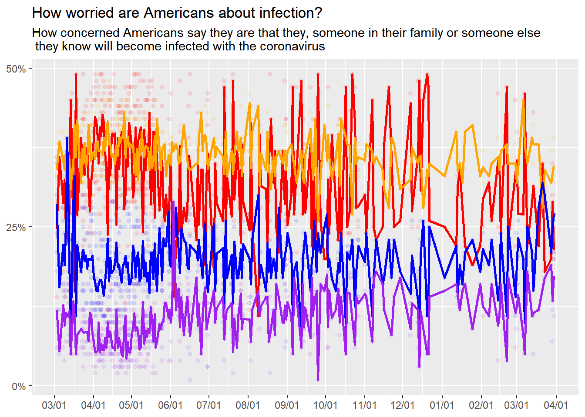
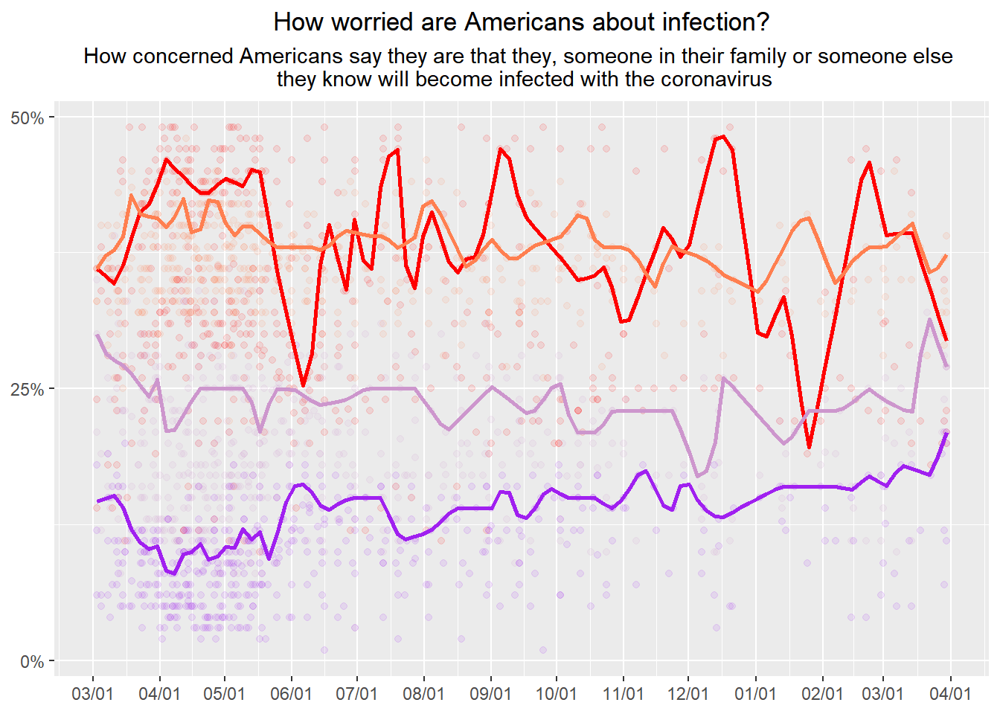

Visualization
Original Graphic


UPDATED - Tried adding text


Source Target Visualization and Data
FiveThirtyEight’s Article: “How Americans View Biden’s Response To The Coronavirus Crisis”
- Specifically the Covid Infection Concern of the US.
Data accessible from button below the graphic. “HERE”
Data wrangling in R
Loading libraries:
library(tidyverse)
library(broom)
library(readr)Import CSV files from FiveThirtyEight and make into objectes:
CovidConcern<- read_csv("docs/data/covid-19-polls-master/covid_concern_polls.csv")## Rows: 678 Columns: 15## -- Column specification --------------------------------------------------------
## Delimiter: ","
## chr (7): pollster, sponsor, population, party, subject, text, url
## dbl (5): sample_size, very, somewhat, not_very, not_at_all
## lgl (1): tracking
## date (2): start_date, end_date##
## i Use `spec()` to retrieve the full column specification for this data.
## i Specify the column types or set `show_col_types = FALSE` to quiet this message.summary(CovidConcern)## start_date end_date pollster
## Min. :2020-01-27 Min. :2020-01-29 Length:678
## 1st Qu.:2020-04-13 1st Qu.:2020-04-16 Class :character
## Median :2020-05-27 Median :2020-05-31 Mode :character
## Mean :2020-07-01 Mean :2020-07-04
## 3rd Qu.:2020-09-02 3rd Qu.:2020-09-06
## Max. :2021-04-17 Max. :2021-04-20
##
## sponsor sample_size population party
## Length:678 Min. : 502 Length:678 Length:678
## Class :character 1st Qu.: 1002 Class :character Class :character
## Mode :character Median : 1031 Mode :character Mode :character
## Mean : 2803
## 3rd Qu.: 1959
## Max. :91214
##
## subject tracking text very
## Length:678 Mode :logical Length:678 Min. : 8.00
## Class :character FALSE:538 Class :character 1st Qu.:27.00
## Mode :character TRUE :140 Mode :character Median :35.00
## Mean :37.56
## 3rd Qu.:47.00
## Max. :73.00
##
## somewhat not_very not_at_all url
## Min. :19.00 Min. : 2.00 Min. : 1.000 Length:678
## 1st Qu.:32.00 1st Qu.:11.00 1st Qu.: 4.000 Class :character
## Median :35.00 Median :17.49 Median : 8.320 Mode :character
## Mean :34.73 Mean :17.46 Mean : 8.801
## 3rd Qu.:38.00 3rd Qu.:23.00 3rd Qu.:12.100
## Max. :48.00 Max. :43.00 Max. :29.000
## NA's :1 NA's :7Covid Concern Data
Selected data. set end_date as x axis. Plot points for each concern level
ConcernedDots<-CovidConcern%>%
select(end_date, very, somewhat, not_very, not_at_all)%>%
ggplot(aes(x=end_date))+
scale_y_discrete(breaks = c("0","25","50"))+
geom_jitter(aes(y=very), color="red", alpha=1/10)+
geom_jitter(aes(y=somewhat), color="orange", alpha=1/10)+
geom_jitter(aes(y=not_very), color="blue", alpha=1/10)+
geom_jitter(aes(y=not_at_all), color="purple", alpha=1/10)Add lines? Try stat_smooth
CovidConcern%>%
select(end_date, very, somewhat, not_very, not_at_all)%>%
ggplot(aes(x=end_date))+
geom_point(aes(y=very), color="red", alpha=1/10)+
geom_point(aes(y=somewhat), color="orange", alpha=1/10)+
geom_point(aes(y=not_very), color="blue", alpha=1/10)+
geom_point(aes(y=not_at_all), color="purple", alpha=1/10)+
stat_smooth(aes(y=very), color="red",method = "lm")+
stat_smooth(aes(y=somewhat), color="orange",method = "lm")+
stat_smooth(aes(y=not_very), color="blue",method = "lm")+
stat_smooth(aes(y=not_at_all), color="purple",method = "lm")## `geom_smooth()` using formula 'y ~ x'
## `geom_smooth()` using formula 'y ~ x'
## `geom_smooth()` using formula 'y ~ x'
## `geom_smooth()` using formula 'y ~ x'Not the right lines… Try adjusting axis scales and then mean lines? Try using stat_summary to get means.
Viz.Fig<-CovidConcern%>%
select(end_date, very, somewhat, not_very, not_at_all)%>%
filter(end_date>"2020-03-01", end_date<"2021-04-01", very<"50")%>%
ggplot(aes(x=end_date))+
geom_point(aes(y=very), color="red", alpha=1/10)+
geom_point(aes(y=somewhat), color="orange", alpha=1/10)+
geom_point(aes(y=not_very), color="blue", alpha=1/10)+
geom_point(aes(y=not_at_all), color="purple", alpha=1/10)+
labs(title = "How worried are Americans about infection?", subtitle = "How concerned Americans say they are that they, someone in their family or someone else \n they know will become infected with the coronavirus")+
theme(axis.title.x= element_blank(), axis.title.y= element_blank())+
scale_y_continuous(breaks = c(0,25,50), labels = function(x) paste0(x * 1, '%'))+
scale_x_date(date_breaks = "1 month", date_labels = "%m/%d")+
stat_summary(aes(y=very),fun="mean", color="red", geom="line", size=1)+
stat_summary(aes(y=somewhat),fun="mean", color="orange", geom="line", size=1)+
stat_summary(aes(y=not_very),fun="mean", color="blue", geom="line", size=1)+
stat_summary(aes(y=not_at_all),fun="mean", color="purple", geom="line", size=1)
print(Viz.Fig)
Close! But still not as clean as the original graphic. Also not clear on how to add a legend for the lines…Lines are still a mess and too detailed. ++++++++++++++++++++++++++++++
Incorporating Feedback
Submitted to the Slack and got feedback by Dr. Handel and Dawson Dobash:
- smoothing lines, try loess curve
- try for figures with labels on other side, should be able to specify the location.
- center and break up title and subtitle
- color match graphic lines.
###try it out
CovidConcern%>%
select(end_date, very, somewhat, not_very, not_at_all)%>%
filter(end_date>"2020-03-01", end_date<"2021-04-01", very<"50")%>%
ggplot(aes(x=end_date))+
geom_point(aes(y=very), color="red", alpha=1/10)+
geom_point(aes(y=somewhat), color="coral", alpha=1/10)+
geom_point(aes(y=not_very), color="plum3", alpha=1/10)+
geom_point(aes(y=not_at_all), color="purple", alpha=1/10)+
ggtitle("How worried are Americans about infection?", subtitle = "How concerned Americans say they are that they, someone in their family or someone else \n they know will become infected with the coronavirus")+
theme(axis.title.x= element_blank(), axis.title.y= element_blank(), plot.title = element_text(hjust=0.5), plot.subtitle = element_text(hjust=0.5))+
scale_y_continuous(breaks = c(0,25,50), labels = function(x) paste0(x * 1, '%'))+
scale_x_date(date_breaks = "1 month", date_labels = "%m/%d")+
scale_linetype_manual(name=c("Very", "Somewhat","Not Very", "Not at All")) +
geom_quantile(aes(y=very), quantiles=0.75, color="red", size=1 ,method="rqss", lambda=2)+
geom_quantile(aes(y=somewhat), quantiles=0.75, color="coral", size=1 ,method="rqss", lambda=2)+
geom_quantile(aes(y=not_very), quantiles=0.75, color="plum3", size=1 ,method="rqss", lambda=2)+
geom_quantile(aes(y=not_at_all), quantiles=0.75, color="purple", size=1 ,method="rqss", lambda=2)## Smoothing formula not specified. Using: y ~ qss(x, lambda = 2)
## Smoothing formula not specified. Using: y ~ qss(x, lambda = 2)
## Smoothing formula not specified. Using: y ~ qss(x, lambda = 2)
## Smoothing formula not specified. Using: y ~ qss(x, lambda = 2)
NOTE:
- geom_smooth was too smooth.
- utilized geom_quantile and adjusted quantiles to show only 1 line and changed the lambda values.
- color matched the lines with some “predefined R colors”.
Adding Lables on the graphic
- Looked at Morgan Taylor’s visualization code for example.
library(directlabels)
library(grid)
#p<-
CovidConcern%>%
select(end_date, very, somewhat, not_very, not_at_all)%>%
filter(end_date>"2020-03-01", end_date<"2021-04-01", very<"50")%>%
ggplot(aes(x=end_date))+
geom_point(aes(y=very), color="red", alpha=1/10)+
geom_point(aes(y=somewhat), color="coral", alpha=1/10)+
geom_point(aes(y=not_very), color="plum3", alpha=1/10)+
geom_point(aes(y=not_at_all), color="purple", alpha=1/10)+
ggtitle("How worried are Americans about infection?", subtitle = "How concerned Americans say they are that they, someone in their family or someone else \n they know will become infected with the coronavirus")+
theme(axis.title.x= element_blank(), axis.title.y= element_blank(), plot.title = element_text(hjust=0.5), plot.subtitle = element_text(hjust=0.5))+
scale_y_continuous(breaks = c(0,25,50), labels = function(x) paste0(x * 1, '%'))+
scale_x_date(date_breaks = "1 month", date_labels = "%m/%d", expand = c(0.001,75))+
scale_linetype_manual(name=c("Very", "Somewhat","Not Very", "Not at All")) +
geom_quantile(aes(y=very), quantiles=0.75, color="red", size=1 ,method="rqss", lambda=2)+
geom_quantile(aes(y=somewhat), quantiles=0.75, color="coral", size=1 ,method="rqss", lambda=2)+
geom_quantile(aes(y=not_very), quantiles=0.75, color="plum3", size=1 ,method="rqss", lambda=2)+
geom_quantile(aes(y=not_at_all), quantiles=0.75, color="purple", size=1 ,method="rqss", lambda=2)+
annotate("text", x=as.Date("2021-04-01"), y=40, label="32.4% Somewhat", color="coral", hjust=0)+
annotate("text", x=as.Date("2021-04-01"), y=33, label="26.1% Not very", color="plum3", hjust=0)+
annotate("text", x=as.Date("2021-04-01"), y=23, label="16.5% Not at all", color="purple", hjust=0)+
annotate("text", x=as.Date("2021-04-01"), y=17, label="24.4% Very", color="red", hjust=0)## Smoothing formula not specified. Using: y ~ qss(x, lambda = 2)
## Smoothing formula not specified. Using: y ~ qss(x, lambda = 2)
## Smoothing formula not specified. Using: y ~ qss(x, lambda = 2)
## Smoothing formula not specified. Using: y ~ qss(x, lambda = 2)# Code to turn off clipping
#gt <- ggplotGrob(p)
#gt$layout$clip[gt1$layout$name == "panel"] <- "off"
#grid.draw(gt)tried the grid to extend the x axsis, but could not get grid.draw to run. *interesting to note the annotated text doesn’t follow the
================
Try directlabels
library(directlabels)
library(tidyquant)## Loading required package: PerformanceAnalytics## Loading required package: xts## Loading required package: zoo##
## Attaching package: 'zoo'## The following objects are masked from 'package:base':
##
## as.Date, as.Date.numeric##
## Attaching package: 'xts'## The following objects are masked from 'package:dplyr':
##
## first, last##
## Attaching package: 'PerformanceAnalytics'## The following object is masked from 'package:graphics':
##
## legend## Loading required package: quantmod## Loading required package: TTR##
## Attaching package: 'TTR'## The following object is masked from 'package:dials':
##
## momentum## Registered S3 method overwritten by 'quantmod':
## method from
## as.zoo.data.frame zoo## == Need to Learn tidyquant? ====================================================
## Business Science offers a 1-hour course - Learning Lab #9: Performance Analysis & Portfolio Optimization with tidyquant!
## </> Learn more at: https://university.business-science.io/p/learning-labs-pro </>library(grid)
CovidConcern%>%
select(end_date, very, somewhat, not_very, not_at_all)%>%
filter(end_date>"2020-03-01", end_date<"2021-04-01", very<"50")%>%
ggplot(aes(x=end_date))+
geom_point(aes(y=very), color="red", alpha=1/10)+
geom_point(aes(y=somewhat), color="coral", alpha=1/10)+
geom_point(aes(y=not_very), color="plum3", alpha=1/10)+
geom_point(aes(y=not_at_all), color="purple", alpha=1/10)+
ggtitle("How worried are Americans about infection?", subtitle = "How concerned Americans say they are that they, someone in their family or someone else \n they know will become infected with the coronavirus")+
theme(axis.title.x= element_blank(), axis.title.y= element_blank(), plot.title = element_text(hjust=0.5), plot.subtitle = element_text(hjust=0.5))+
scale_y_continuous(breaks = c(0,25,50), labels = function(x) paste0(x * 1, '%'))+
scale_x_date(date_breaks = "1 month", date_labels = "%m/%d", expand = c(0.0001,90))+
scale_linetype_manual(name=c("Very", "Somewhat","Not Very", "Not at All")) +
geom_quantile(aes(y=very), quantiles=0.75, color="red", size=1 ,method="rqss", lambda=2)+
geom_quantile(aes(y=somewhat), quantiles=0.75, color="coral", size=1 ,method="rqss", lambda=2)+
geom_quantile(aes(y=not_very), quantiles=0.75, color="plum3", size=1 ,method="rqss", lambda=2)+
geom_quantile(aes(y=not_at_all), quantiles=0.75, color="purple", size=1 ,method="rqss", lambda=2)+
geom_dl(aes(y= somewhat,label = "32.4% Somewhat", color="coral"), method = list(dl.trans(x = x + 0.2), "last.points"))+
geom_dl(aes(y= not_very,label = "26.1% Not Very", color="plum3"), method = list(dl.trans(x = x + 0.2), "last.points"))+
geom_dl(aes(y= not_at_all,label = "16.5% Not at All", color="purple"), method = list(dl.trans(x = x + 0.2), "last.points"))+
geom_dl(aes(y= very,label = "24.4% Very", color="red"), method = list(dl.trans(x = x + 0.2), "last.points"))## Smoothing formula not specified. Using: y ~ qss(x, lambda = 2)## Smoothing formula not specified. Using: y ~ qss(x, lambda = 2)
## Smoothing formula not specified. Using: y ~ qss(x, lambda = 2)
## Smoothing formula not specified. Using: y ~ qss(x, lambda = 2)Interesting the resulting labels have odd color choices, half of them are correct the other… not so much.
Concluding thoughts
The data is all there and the dotplot wasn’t too difficult. I need more clues on what kind of smoothing was applied to the lines. There are certain trends that are visable from my reproduction but it’s not exact.
There are some additional quick aesthetic choices I think I could have made, but I wasn’t prioritizing them as much as more of the overall look of the graphic.
I enjoyed learning about annotating and appreciate the direction my peers gave me to look into the annotation ability. I knew there was within R’s capabilities but never tried using it as it seemed very complicated. I’ve got a bit of ways to go when it comes to really cleaning up the graphics but I also got to learn about how to utilize dates in ggplot. This will be useful in helping some of my peers when they do persistence studies and can utilize their summarized experimental run data to plug into something.
Final comparisons
Below is the Original graphic I am trying to replicate.

Original Graphic
Below is the better revised attempt at replication.
Replication of graphic using